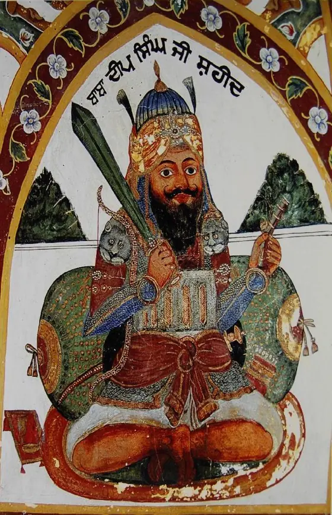
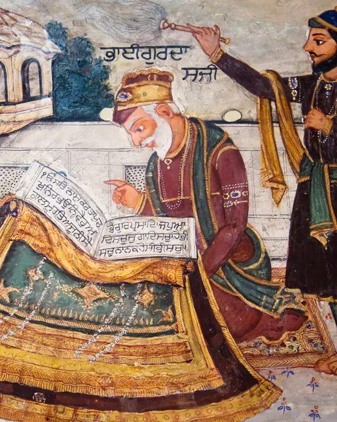
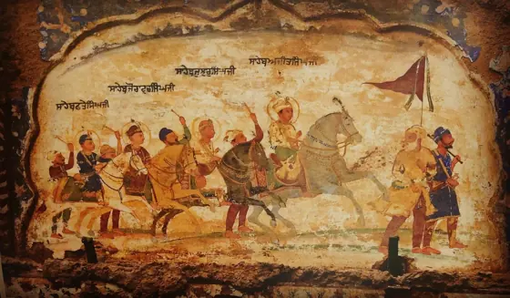
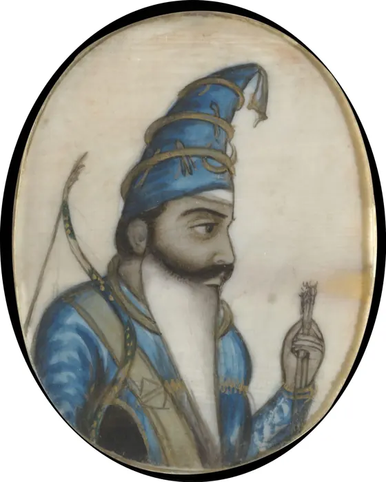
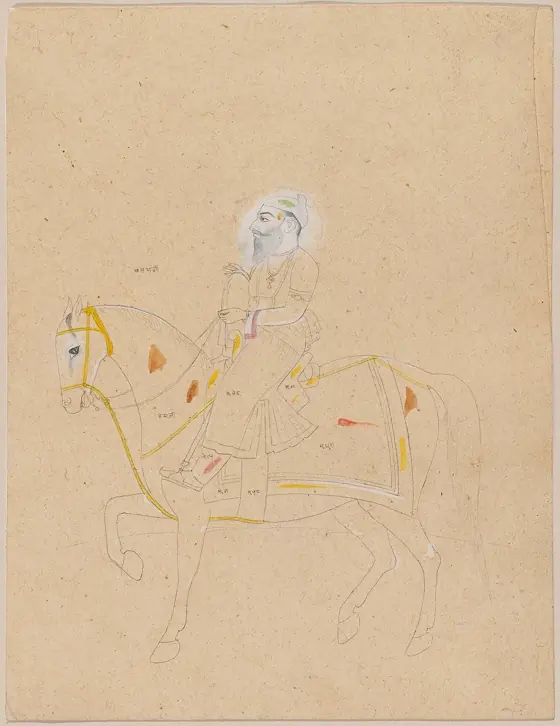
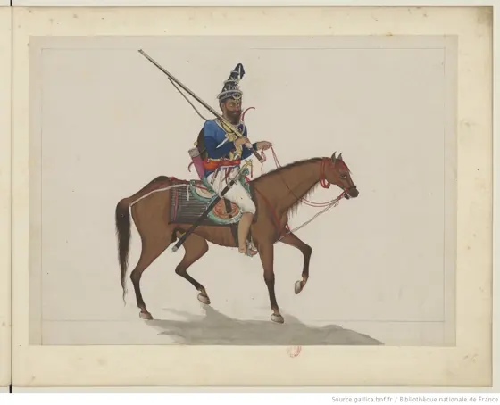
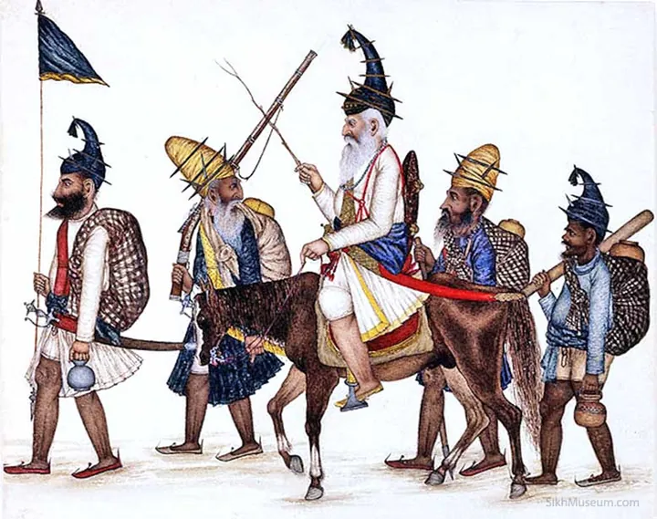
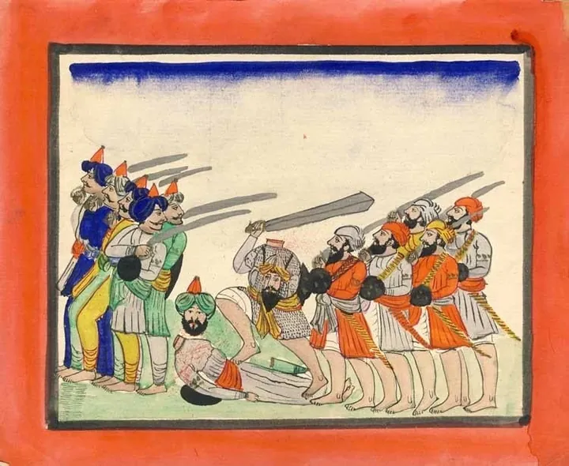
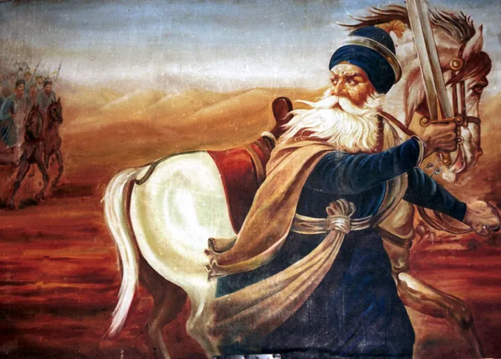
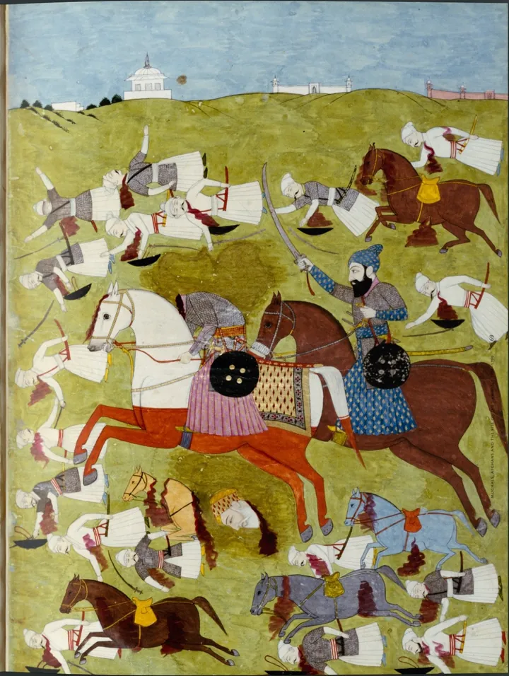
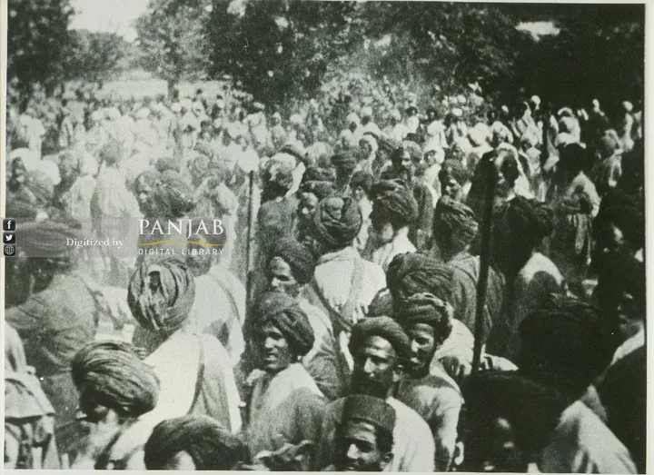
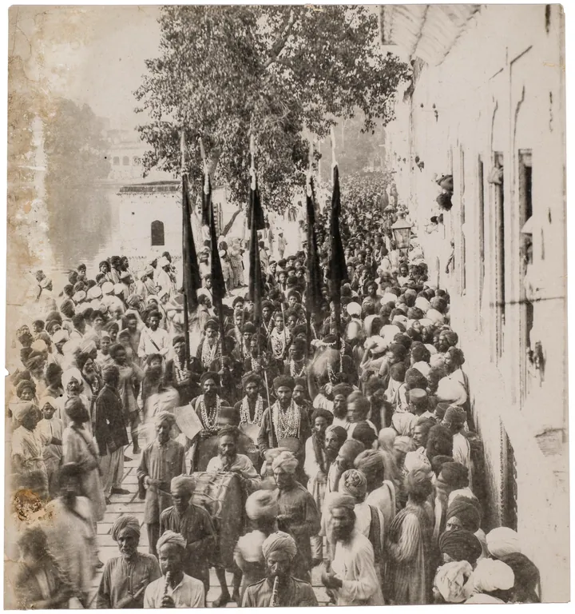
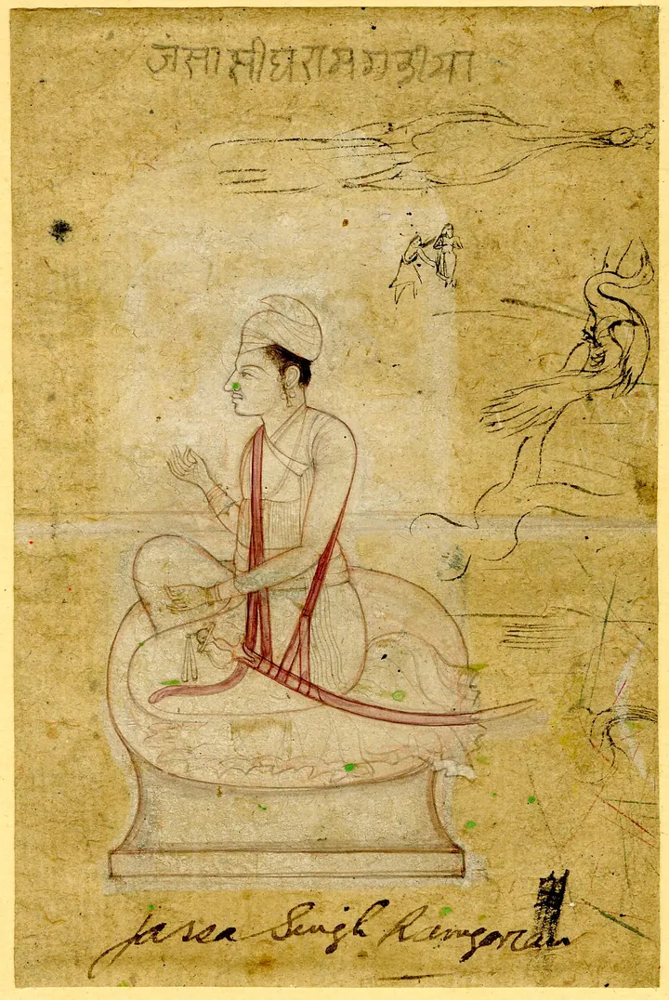
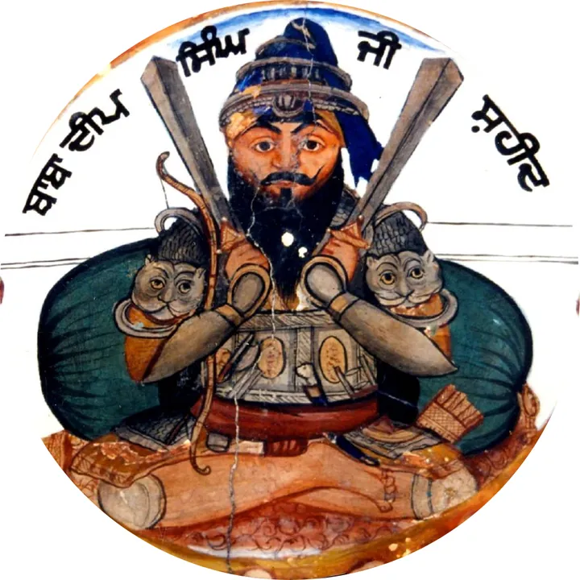
Gurmat Vidyala · 06 · Itihaas
ਇਤਿਹਾਸ ਵਿਦਿਆਲਾItihaas Vidyala
Learn the history of the Panth: the sakhian, the shaheeds, and the bungas these classes are named after.
What is taught
We read the history of the Guru Sahiban, the shaheeds and the Panth from the granths of itihaas. Contact us to ask which granths are being read now and what time the class starts.
Students bring a homework project to the class most weeks, usually a model of the sakhi they have just heard. In February 2026 they built Chamkaur di Garhi, with LEGO for the fort, clay for the hill around it, and LED lights for the jot of Guru Gobind Singh Ji.
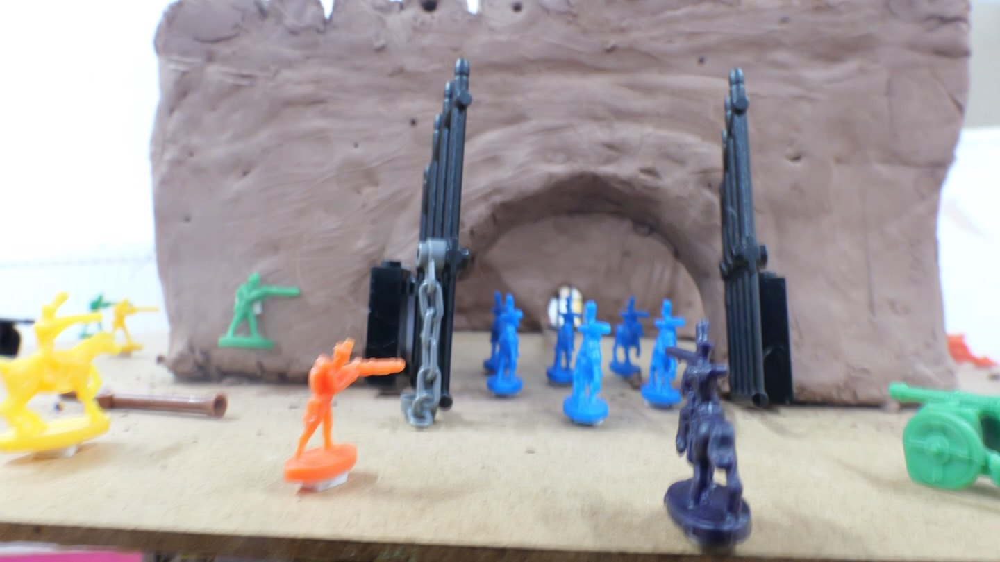
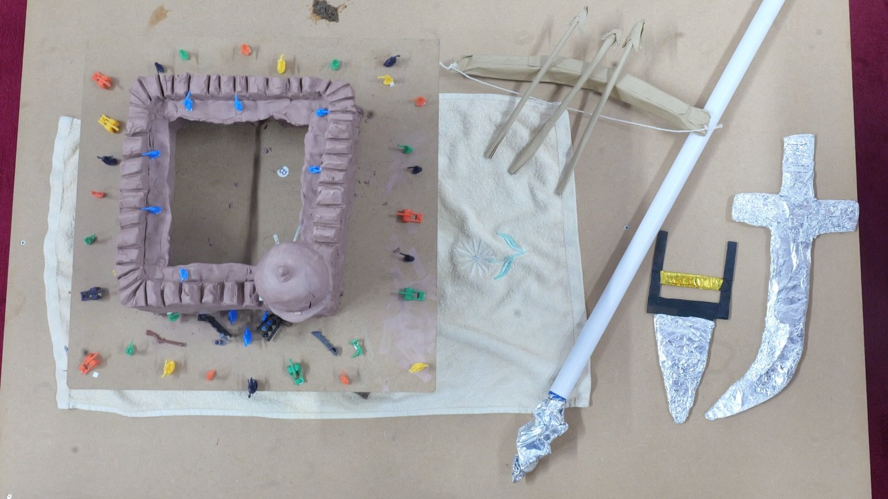
What we have run before
- Monday Night Talks, 2025, at Guru Tegh Bahadur Gurdwara Sahib, 106 East Park Road. Bibi Gagan Kaur Ji, Bhai Baljinder Singh Ji and Bhai Harjit Singh Ji gave talks on the life of Sri Guru Tegh Bahadur Ji, read adhyai by adhyai, and Giani Baljinder Singh Ji spoke on Patshahi 9, the Silent Light of Strength.
- Itihaas Katha within the Gurbani Katha Vichaar by Giani Baljinder Singh Ji (Shaheedi Bunga UK), Derby and West Bromwich, June 2019.
Ask us before your first class.
Send us a message and we'll tell you the day, the room and who is teaching. You can reach us on WhatsApp +44 7394 848407 or at gurmat@shaheedibunga.com.